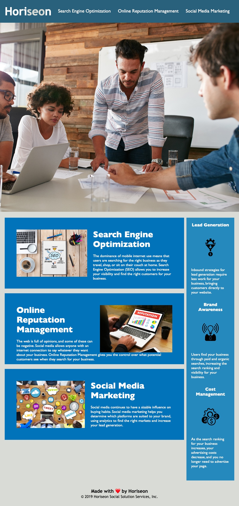

Hello, I'm Lainey Creighton, a passionate software developer on a transformative journey. With a
solid foundation in hospitality and events management, where I honed my skills for over eight years,
I'm now venturing into the dynamic realm of software development. Currently pursuing a full stack
certification from UC Berkeley, I am driven by an insatiable curiosity and a thirst for knowledge.
My career shift reflects my determination to embrace challenges head-on and evolve in a rapidly
changing industry. Armed with a rich background in customer-centric environments, I understand the
value of seamless experiences and efficient systems. As I transition into the world of code, I am
excited to merge my creative problem-solving abilities with the precision of programming.
My journey from hospitality to software development showcases my adaptability, resilience, and
passion for continuous growth. I am eager to collaborate, innovate, and contribute to creating
impactful digital solutions. Let's embark on this technological voyage together, where my unique
blend of skills promises to bring fresh perspectives to the world of software development.
ABOUT
ABOUT
PROJECTS
PROJECTS
See my work! Much more to come soon. Hover over each project to see its details below:
Code Refactor
Description:
This is a study guide for the UC Berkley coding bootcamp. I built this project to have an additional resource to refer to throughout the duration of the bootcamp. This will help structure my learning so I can better retain the information taught in the bootcamp. Without any prior dev knowledge, this project has allowed me to learn some basics of coding and given me the confidence to know that I can be successful in this field. Additionally, this project has helped me better understand how I learn and can study coding.
Deployed Site:
Prework Study Guide
Description:
This is a study guide for the UC Berkley coding bootcamp. I built this project to have an additional resource to refer to throughout the duration of the bootcamp. This will help structure my learning so I can better retain the information taught in the bootcamp. Without any prior dev knowledge, this project has allowed me to learn some basics of coding and given me the confidence to know that I can be successful in this field. Additionally, this project has helped me better understand how I learn and can study coding.
Deployed Site:

Meet Salmon
Description:
This project is still in the works! I will be introducing my dog, Salmon. She loves being the center of attention, so it was only fitting to make an entire project about her.
Upstream Travel
Description:
Most travel apps available today suggest traditional travel itineraries to places that have been well traveled and explored. With Upstream Travel, we want to provide unique travel experiences that will leave travelers with unforgettable memories. Current travel apps return only the most popular or highest rated places. Upstream Travel will recommend uncommon places to eat at and explore by filtering results through the lens of a local resident for food and destinations and give you a feel for the adventures you might have with a music track chosen for a vibe check.
Deployed Site: